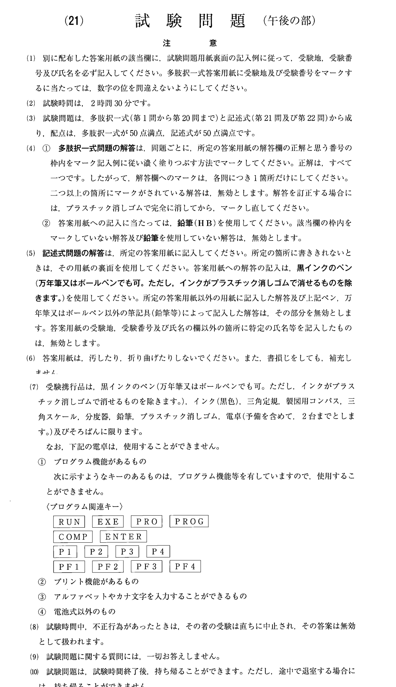
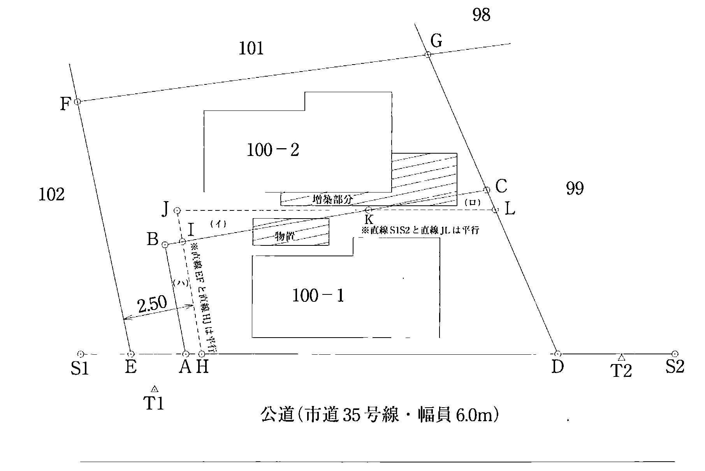
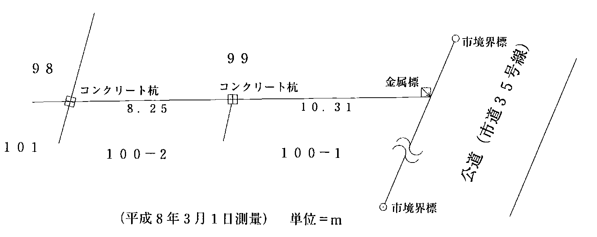
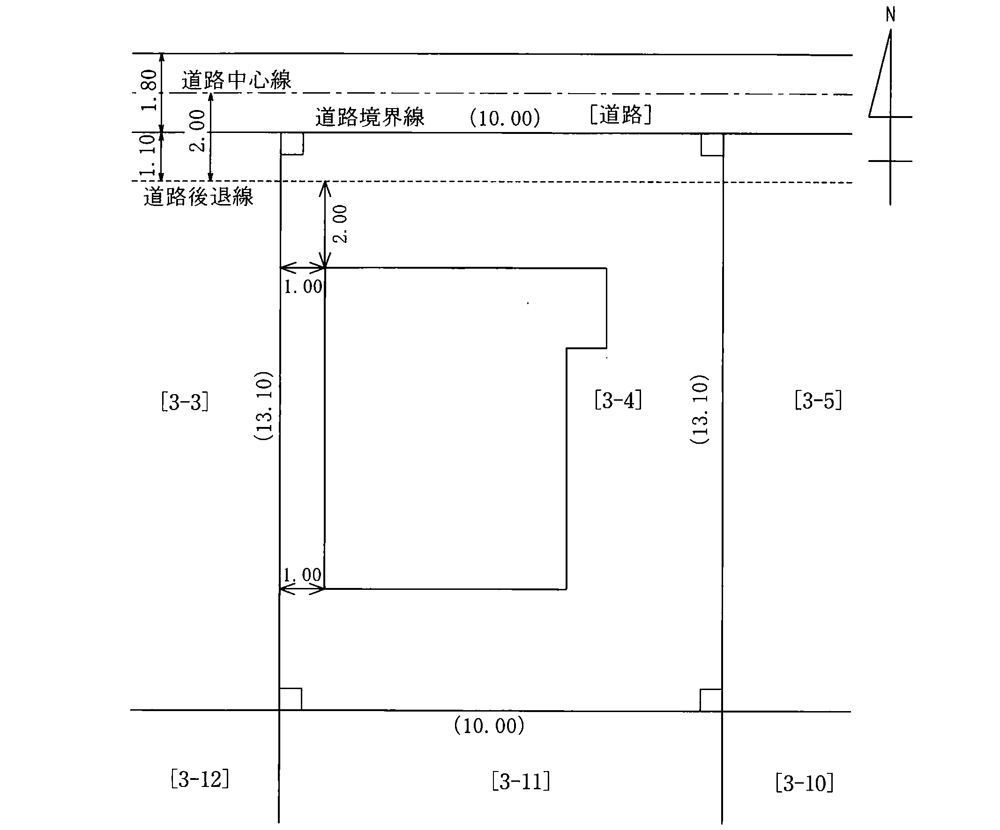
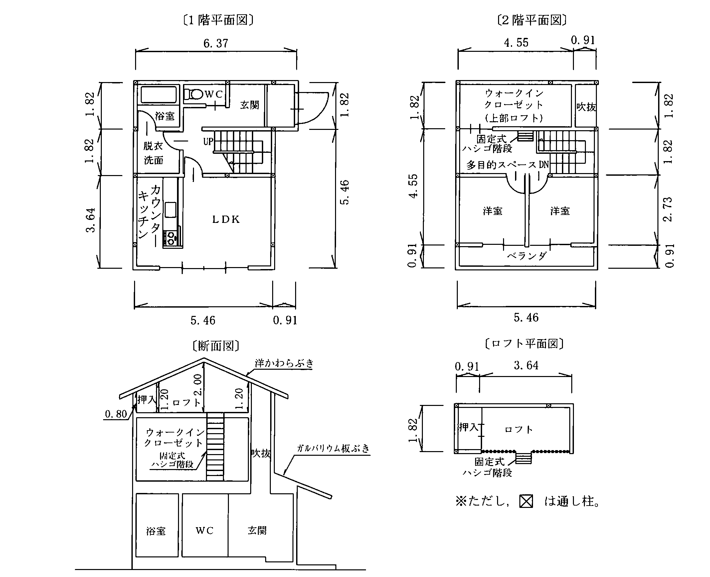
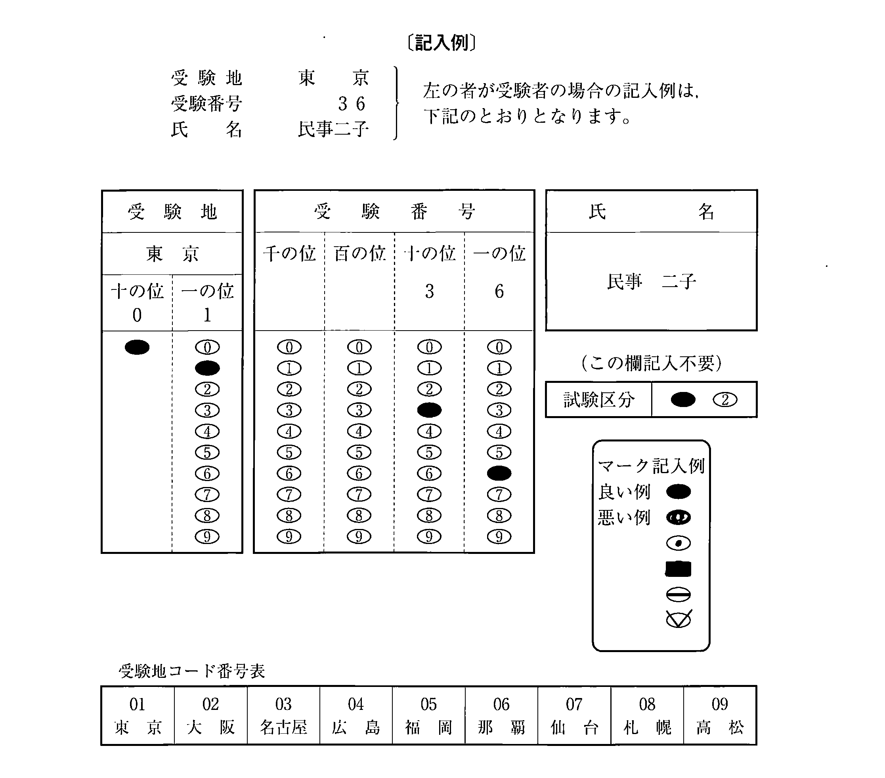

注意（問題冊子の表紙）

多肢択一式（第1問〜第20問）
第1問
Aは，平成2年1月1日，B所有の甲土地を，自己の所有地であると過失なく信じて占有を開始し，以後，所有の意思をもって，平穏に，かつ，公然と甲土地を占有している。次の対話は，この事例における取得時効と登記に関する教授と学生との対話である。教授の質問に対する次のアからオまでの学生の解答のうち，判例の趣旨に照らし誤っているものの組合せは，後記1から5までのうちどれか。
教授： まず，平成10年1月1日に甲土地がBからCに譲渡されたという事例で質問します。この場合において，Aは，平成15年1月1日に，Cに対して甲土地の時効取得を主張することができますか。学生：ア Aは，所有権の移転の登記をしなくても，Cに対して甲土地の時効取得を主張することができます。教授： 次に，CがBから甲土地を譲り受けたのが平成13年1月1日であったという事例で質問します。この場合には，Aは，平成15年1月1日に，Cに対して甲土地の時効取得を主張することができますか。学生：イ この場合には，Aは，所有権の移転の登記をしなければ，Cに対して時効取得を主張することができません。教授： 同じ事例で，Aが，平成15年1月1日に，Bに対して甲土地の時効取得を主張する場合は，どうでしょうか。学生：ウ この場合も，Aは，所有権の移転の登記をしなければ，Bに対して時効取得を主張することができません。教授： 同じ事例で，Aは，平成5年1月1日から10年間の占有に基づいて，平成15年1月1日に，Cに対して甲土地の時効取得を主張することはできますか。学生：エ そのような主張は許されません。教授： では，同じ事例で，Aが，平成2年1月1日から20年が経過するのを待って，その後に，20年間の占有に基づいて，Cに対して甲土地の時効取得を主張することはできますか。学生：オ Aは，自己の所有地であると過失なく信じて甲土地の占有を開始したので，20年の取得時効を主張することはできません。
1 アイ2 アエ3 イオ4 ウエ5 ウオ
第2問
地上権に関する次のアからオまでの記述のうち，判例の趣旨に照らし誤っているものの組合せは，後記1から5までのうちどれか。
- ア工作物の所有を目的として設定された地上権は，設定後にその工作物が滅失したときは，消滅する。
- イ地上権を時効によって取得するためには，土地の継続的な使用という外形的事実が存在し，かつ，その使用が地上権行使の意思に基づくものであることが客観的に表現されていることが必要である。
- ウ地上権者は，土地の所有者の承諾を得ないで，地上権を譲渡し，又は地上権を目的とする抵当権を設定することができる。
- エ地上権者は，設定契約において特段の定めがない場合であっても，土地の所有者に対して地代の支払義務を負い，その場合の地代の額は，当事者の請求により裁判所が定める。
- オ定期の地代を支払うべき地上権者が，引き続き2年以上地代の支払を怠ったときは，土地の所有者は，地上権の消滅を請求することができる。
1 アウ2 アエ3 イエ4 イオ5 ウオ
第3問
遺産分割に関する次のアからオまでの記述のうち，判例の趣旨に照らし正しいものの組合せは，後記1から5までのうちどれか。
- ア遺産分割協議が成立した後であっても，共同相続人全員の合意で分割協議を解除した上で再度分割協議を成立させることができる。
- イ相続財産中の不動産につき，遺産分割により法定相続分と異なる権利を取得した相続人は，登記を経なくても，当該分割後に当該不動産につき権利を取得した第三者に対し，当該分割による権利の取得を対抗することができる。
- ウ遺産分割協議が成立したが，相続人Aがこの協議において相続人Bに対して負担した債務を履行しない場合には，Bは，遺産分割協議を解除することができる。
- エ相続放棄をした者は，他の共同相続人の同意があったとしても，遺産分割協議の当事者となることができない。
- オ被相続人が「甲不動産は相続人Cに相続させる。」との遺言をしていた場合であっても，他の相続人が甲不動産を取得することとし，Cは遺産中の他の財産を取得することとする旨の遺産分割をすることができる。
1 アイ2 アエ3 イオ4 ウエ5 ウオ
第4問
建物の登記に関する次のアからオまでの記述のうち，正しいものの組合せは，後記1から5までのうちどれか。
- ア耐用年数がおおむね1年程度のビニール材質を用いて屋根及び壁が仕上げられている温室は，建物として登記することができる。
- イ貨物運搬用のコンテナボックスを利用した貸倉庫は，基礎工事が施され土地に定着していれば，建物として登記することができる。
- ウ円柱状の形をした石油備蓄用の石油タンクは，建物として登記することができる。
- エ機械上に建設された建造物は，地上に基脚や支柱がなくても，建物として登記することができる。
- オ屋外野球場の観覧席のうち屋根を有する部分は，建物として登記することができる。
1 アエ2 アオ3 イウ4 イオ5 ウエ
第5問
次の対話は，地目に関する教授と学生との対話である。教授の質問に対する次のアからオまでの学生の解答のうち，正しいものの組合せは，後記1から5までのうちどれか。
教授： 土地の登記事項の一つに地目がありますが，これについて説明してください。学生：ア 地目は，土地の用途による分類です。所在，地番及び地積と共に，登記された土地を特定するためのもので，登記記録の表題部に記録されます。教授： 土地の地目が何であるかは，どのように定められるのですか。土地の所有者がその利用目的に従って，適当に定めることができますか。学生：イ 登記記録に記録する地目は，不動産登記規則に定められている23種類のうちから土地の現況と利用目的により登記官が認定して定めます。この認定に当たり考慮される土地の利用目的は，所有者が主観的に考える利用目的に従って上記の23種類のうちから定まることになります。教授： では，例えば畑と資材置場に利用されている一筆の土地の地目はどのように定められますか。学生：ウ 一筆の土地のうちに現況や利用目的が異なる部分があっても，それが部分的でわずかな差異であるときは，土地全体の状況を見て「畑」又は「雑種地」と判断しますが，土地全体が複合的用途に利用されていると認められるときは，「畑・雑種地」のようにしても差し支えありません。教授： 地目を原野として登記されている土地を資材置場として利用していたが，地目の変更の登記をしないまま，現在は建物の敷地として利用している場合には，どのような地目の変更の登記の申請をすることになりますか。学生：エ 表示に関する登記は，不動産の物理的現況を公示するものですので，この場合は，中間の雑種地という地目への変更を経ることなく，直接現在の宅地という地目への地目の変更の登記の申請をすることになります。教授： 土地区画整理事業施行地区内で仮換地が指定された従前の土地の地目及び現況が雑種地である場合において，仮換地上に建物を建築したときは，従前の土地の地目を宅地にする地目の変更の登記の申請をすることはできますか。学生：オ 従前の土地に対する利用権は既に仮換地に対する利用権に移っていますので，その仮換地上に建物を建てた場合は，従前の土地の地目を宅地にする地目の変更の登記の申請をすることができます。
1 アイ2 アエ3 イウ4 ウオ5 エオ
第6問
登記識別情報に関する証明についての次のアからオまでの記述のうち，誤っているものの組合せは，後記1から5までのうちどれか。
- ア登記識別情報に関する証明は，登記名義人及び利害関係人から請求することができる。
- イ登記識別情報に関する証明は，電子情報処理組織を使用して請求することはできない。
- ウ登記識別情報に関する証明は，提供する登記識別情報が有効であることのほか，登記識別情報が通知されていないこと又は失効していることについても請求することができる。
- エ登記識別情報に関する証明は，登記名義人である請求人の住所が登記記録と合致しない場合には，住所についての変更があったことを証する市町村長又は登記官の証明情報を提供して請求することができる。
- オ登記識別情報に関する証明は，土地家屋調査士が代理人として請求する場合には，所属土地家屋調査士会が発行した当該土地家屋調査士の職印に関する証明情報を提供して，当該請求に係る代理人の権限を証する情報を提供することなく，請求することができる。
1 アイ2 アオ3 イウ4 ウエ5 エオ
第7問
地積の更正の登記に関する次のアからオまでの記述のうち，正しいものの組合せは，後記1から5までのうちどれか。
- ア地積に誤りがある土地の一部について所有権を取得した者は，当該部分の所有権を証する情報を提供して，代位により地積の更正及び当該部分の分筆の登記を申請することができる。
- イ甲地の一部を乙地とする分筆の登記の申請において，申請しようとする分筆線の位置を誤って申請し，そのまま登記が完了した場合には，分筆線の位置を更正するために甲地及び乙地について地積の更正の登記を申請することができる。
- ウ地積に誤りがある土地の利害関係人は，当該土地の所有権の登記名義人に対し地積の更正の登記手続を命ずる判決を得て，代位により地積の更正の登記を申請することができる。
- エ代位による申請で地積の更正の登記がされた場合において，当該土地の所有権の登記名義人は，後日当該代位原因が存しなかったことを明らかにすれば錯誤を原因として地積の更正の登記の抹消を申請することができる。
- オ測量の結果が，登記記録の地積と異なる場合において，その差が不動産登記規則に定められている誤差の限度の範囲内であるときであっても，地積の更正の登記を申請することができる。
1 アウ2 アオ3 イウ4 イエ5 エオ
第8問
表題部所有者の登記に関する次のアからオまでの記述のうち，正しいものの組合せは，後記1から5までのうちどれか。
- ア表題部所有者Aは，表題部所有者を真正な所有者であるBとする更正の登記を単独で申請することができる。
- イ表題部所有者AからA及びBとする更正の登記を申請するに当たっては，Bが所有権を有することを証する情報を提供することを要する。
- ウ表題部所有者A，B及びCの持分が，Aは10分の5，Bは10分の3，Cは10分の2と登記されている不動産について，Bの持分を10分の2，Cの持分を10分の3とする更正の登記をCが申請するに当たっては，他の共有者A及びBの承諾を証する情報を提供することを要する。
- エ表題部所有者株式会社Aが商号の変更によりB株式会社となった場合には，B株式会社は，直ちに表題部所有者の変更の登記を申請することができる。
- オ表題部所有者がA及びBである場合に，Aが死亡してB以外に相続人がいないときは，Bは，直ちに自己を単独所有者とする表題部所有者の変更の登記を申請することができる。
1 アエ2 アオ3 イウ4 イエ5 ウオ
第9問
登記の申請をする場合における添付情報に関する次のアからオまでの記述のうち，作成後3月以内のものでなければならないものの組合せは，後記1から5までのうちどれか。
- ア建物の表題登記の申請に当たり，表題部所有者の住所を証する情報として提供された，市町村長が作成した当該表題部所有者についての住民票の写し
- イ建物の表題登記の申請に当たり，表題部所有者の所有権を証する情報として工事施工会社作成の工事完了引渡証明書と併せて提供された，当該工事施工会社の代表者の印鑑の証明書
- ウ合筆の登記の申請に当たり，登記識別情報を提供することができない場合に，当該登記の申請代理人である土地家屋調査士が作成した本人確認情報と併せて提供された，所属土地家屋調査士会が発行した当該土地家屋調査士の職印に関する証明書
- エ分筆の登記の申請に当たり，抵当権の消滅承諾書として会社である抵当権者が作成した抵当権放棄証書と併せて提供された，当該抵当権者の代表者の印鑑の証明書
- オ法定代理人による地目の変更の登記の申請に当たり，当該法定代理人の権限を証する情報として提供された，市町村長が作成した当該申請者本人についての戸籍謄本
1 アエ2 アオ3 イウ4 イエ5 ウオ
第10問
建物の表示に関する登記に関する次のアからオまでの記述のうち，正しいものの組合せは，後記1から5までのうちどれか。
- ア区分建物以外の建物（以下本問において「非区分建物」という。）であって，新築後，表題登記がないまま1月以上が経過したものを譲り受けたAは，譲受け後1月以内に，当該非区分建物の表題登記を申請しなければならない。
- イ共用部分である旨の登記がある建物について，共用部分である旨を定めた規約を廃止した場合には，当該建物の所有者Aは，当該規約の廃止の日から1月以内に，当該建物の表題登記を申請しなければならない。
- ウ表題部所有者をAとする建物に附属する建物をAが新築したが，表題部の変更の登記の申請をしないままAが死亡した場合には，その相続人B及びCは，相続による当該主たる建物の所有権の移転の登記を行った後でなければ，当該主たる建物の表題部の変更の登記を申請することができない。
- エAが所有する建物をえい行移転したときは，Aは，当該建物の滅失登記と表題登記を同時に申請しなければならない。
- オAが表題登記がない非区分建物の所有権を取得したが，表題登記の申請をしないまま死亡した場合には，その相続人B及びCは，当該建物について，Aを表題部所有者とする表題登記を申請しなければならない。
1 アイ2 アエ3 イオ4 ウエ5 ウオ
第11問
建物の合併に関する次の1から5までの記述のうち，誤っているものはどれか。
- 1所有権の登記名義人が建物の合併の登記を書面により申請する場合において，登記識別情報の通知を希望しないときは，あらかじめこれを希望しない旨の申出をする必要がある。
- 2区分建物が互いに接続していないときは，これらの区分建物について区分合併の登記をすることができない。
- 3二つの建物の所在が，それぞれ異なる地番区域であっても，当該建物の合併の登記をすることができる。
- 4合併する双方の建物に所有権の登記のほかに質権の登記がされていて，その質権の登記の目的，申請の受付の年月日及び受付番号並びに登記原因及びその日付が同一であるときは，これらの建物について合併の登記をすることができる。
- 5表題部所有者が建物の合併の登記を申請する場合には，当該登記の申請書に自己の印鑑に関する証明書を添付しなければならない。
第12問
登記等の申請における添付書面（磁気ディスクを除く。）の原本の還付請求に関する次のアからオまでの記述のうち，誤っているものの組合せは，後記1から5までのうちどれか。
- ア表題部所有者についての更正の登記の申請をするに当たって添付する表題部所有者の当該更正についての承諾書は，原本の還付を請求することができない。
- イ建物を合体した場合において，登記の申請をするに当たって添付する存続登記に係る権利の登記名義人の当該合体についての承諾書は，原本の還付を請求することができない。
- ウ登記識別情報通知書をもって登記識別情報を提供する場合は，当該通知書の原本の還付を請求することができない。
- エ建物の表題登記の申請をするに当たって所有権証明書として添付する工事施工会社作成の工事完了引渡証明書の成立の真実性を担保するための当該工事施工会社の代表者の印鑑の証明書は，原本の還付を請求することができない。
- オ筆界特定の申請をするに当たって添付する書面は，原本の還付を請求することができない。
1 アイ2 アウ3 イエ4 ウオ5 エオ
第13問
地図等の訂正に関する次のアからオまでの記述のうち，誤っているものの組合せは，後記1から5までのうちどれか。
- ア地図又は地図に準ずる図面の訂正（以下本問において「地図訂正」という。）の申出に当たり，地図又は地図に準ずる図面に表示された土地の区画又は位置若しくは形状に誤りがあるときは，土地所在図又は地積測量図を添付しなければならない。
- イ地図の訂正をすることによって，申出に係る土地以外の土地の区画を訂正すべきこととなる場合には，申出に基づき地図の訂正をすることができない。
- ウ土地の登記記録の地積に錯誤があり，当該土地の地積測量図に誤りがある場合において，地積に関する更正の登記の申請をするときは，この申請と併せて地積測量図の訂正の申出をしなければならない。
- エ相続によって土地の所有権を取得した者は，所有権の移転の登記を経ていなくても地図訂正の申出をすることができる。
- オ書面を提出する方法による地図訂正の申出について取下げ又は却下があったときは，申出書及びその添付書面は，申出人に還付される。
1 アウ2 アエ3 イエ4 イオ5 ウオ
第14問
不動産登記法第24条に基づく登記官による本人確認（以下「本人確認調査」という。）に関する次のアからオまでの記述のうち，誤っているものの組合せは，後記1から5までのうちどれか。
- ア所有権の登記がある土地の合筆の登記が申請された場合において，申請前3月以内に所有権の登記名義人の住所の変更の登記がされているときは，登記官は，当該申請人について本人確認調査をしなければならない。
- イ登記官は，登記の申請が資格者代理人によってされている場合において，本人確認調査をすべきときは，原則として，まず，当該資格者代理人に対し必要な情報の提供を求める。
- ウ本人確認調査の契機とするための不正登記防止の申出は，申出書を送付することによってすることができる。
- エ本人確認調査は，当該申請人の申請の権限の有無についての調査であって，申請人の申請意思の有無は調査の対象ではない。
- オ登記官が本人確認調査を行うに当たっては，電話等による事情の聴取又は資料の提出等により本人であることを確認することができる場合には，本人に出頭を求める必要はない。
1 アウ2 アオ3 イウ4 イエ5 エオ
第15問
次のアからオまでの筆界特定の申請のうち，その申請が却下されるものの組合せは，後記1から5までのうちどれか。
- ア対象土地以外の土地であって，特定を求める筆界上の点を含む他の筆界で対象土地と接する土地の所在が，申請を受けた法務局又は地方法務局の管轄に属しない筆界特定の申請
- イ筆界の確定を求める裁判において係争中の筆界についてする筆界特定の申請
- ウ表題登記のない道路と，これに接する同じく表題登記のない水路との境についてする筆界特定の申請
- エ対象土地の抵当権者がする筆界特定の申請
- オ一筆の土地の一部の所有権を取得した者が，取得した部分以外の土地部分の筆界についてする筆界特定の申請
1 アイ2 アウ3 イオ4 ウエ5 エオ
第16問
登記所に備え付けられる図面について述べた次の文章中の（①）から（⑤）までの語句のうち，誤っているものは幾つあるか。
明治政府は，国の財政基盤を確立するために，土地の所有者から税金を徴収することとし，明治初期に（①地租改正）事業を施行し，その一環として全国の土地を検査・測量して各土地の所有者を確定し，これに基づき地券を発行したが，その際，（②改租図）が作成された。これらの図面は，精度が低いものが多かったので，その後，再度地押調査が行われて更正図が作成され，これらの図面の正本は，土地台帳附属地図として（③市町村役場）に保管されることとなった。これらが，いわゆる公図の大部分を占める図面である。その後，これらの図面は，昭和25年に土地台帳及び家屋台帳とともに登記所に移管されたが，昭和35年の不動産登記法の改正に伴う土地台帳法の廃止により，法的根拠を失った。その後，平成5年の不動産登記法の改正により，これらの図面は，（④「土地の位置，方位，形状及び地番」）を表示する（⑤「地図に準ずる図面」）として法律上の根拠を持つに至った。
1 1個2 2個3 3個4 4個5 5個
第17問
建物の床面積の定め方に関する次のアからオまでの記述のうち，正しいものの組合せは，後記1から5までのうちどれか。
- ア上屋を有する荷物の積卸場は，上屋の下部にある積卸場の部分の面積を床面積に算入する。
- イビルの屋上にある出入口のためだけの階段室は，外気分断性がある場合には，床面積に算入する。
- ウ木造2階建て住宅の1階部分を駐車スペースとして利用する場合には，当該スペースの3方向に壁があれば，前面にシャッターがなく常時開放されていても，当該スペース部分は床面積に算入する。
- エ5階建ての建物に設置してあるエレベータ室は，エレベータが各階に止まる仕様であっても，1階部分のみ床面積に算入する。
- オ建物に附属する手すりの付いている屋外の階段部分は，床面積に算入する。
1 アイ2 アウ3 イエ4 ウオ5 エオ
第18問
合体後の建物についての建物の表題登記及び合体前の建物についての建物の表題部の登記の抹消（以下「合体による登記等」という。）に関する次のアからオまでの記述のうち，正しいものの組合せは，後記1から5までのうちどれか。
- ア一棟の建物を区分した数個の建物が隔壁部分の取壊しの工事をしたことによって区分建物の要件を欠くこととなった場合には，合体による登記等を申請しなければならない。
- イ所有権の登記名義人が異なる数個の建物を合体した場合の合体による登記等の申請は，合体前の建物の所有権の登記名義人全員が共同してしなければならない。
- ウ合体前の建物が区分建物であり，合体後の建物も区分建物である場合において，その所有者が当該合体後の区分建物が属する一棟の建物の所在する土地の所有権の登記名義人であったにもかかわらず，合体前の区分建物のいずれについても敷地権の登記がないときは，合体による登記等の申請をするに当たって，所有権が敷地権でないことを証する情報の添付は要しない。
- エ既登記の建物に接続して構造上は独立しているが利用上は独立していない建物を新築した場合の登記は，建物の合体による登記等の申請によらなければすることができない。
- オ合体前の一方の建物に抵当証券が発行されている抵当権の登記があり，かつ，合体後の建物の持分について当該抵当権に係る権利が存続する場合において，合体による登記等を申請するときは，当該抵当権に関する添付情報としては当該抵当権の登記名義人が合体後の建物の持分についてする当該抵当権の登記と同一の登記をすることを承諾したことを証する当該抵当権の登記名義人が作成した情報又は当該抵当権の登記名義人に対抗することができる裁判があったことを証する情報を添付情報として提供すれば足りる。
1 アイ2 アウ3 イオ4 ウエ5 エオ
第19問
区分建物の表示に関する登記に関する次のアからオまでの記述のうち，正しいものの組合せは，後記1から5までのうちどれか。
- ア甲区分建物が属する一棟の建物の法定敷地とされている土地を乙区分建物の駐車場として利用した場合，当該土地を乙区分建物が属する一棟の建物の規約敷地とし，乙区分建物の敷地権として登記することができる。
- イAが，分譲マンションとして販売する目的でA単独名義で建築確認通知を受けた一棟の建物である甲建物について，施工業者Bから工事完成後に引渡しを受けた後，不動産販売業者Cに譲渡した場合，Cは甲建物に属する区分建物について，Cを表題部所有者とする区分建物の表題登記を申請することができる。
- ウ駐輪場として規約共用部分とされた建物を改装及び増築して集会場に変更した場合，表題部の変更の登記の申請には，変更後の建物図面及び各階平面図を提供すれば足りる。
- エ一棟の建物に属する区分建物の全部が滅失した場合，その一棟の建物に属する区分建物の表題部所有者又は所有権の登記名義人の一人は，単独で一棟の建物の滅失の登記を申請することができる。
- オ共用部分である旨の登記は，当該共用部分である建物が属する一棟の建物の区分所有者の共用に供される場合にのみすることができる。
1 アエ2 アオ3 イウ4 イエ5 ウオ
第20問
土地家屋調査士の欠格事由に関する次のアからオまでの記述のうち，平成21年4月1日現在において正しいものは幾つあるか。ただし，自然人A，B，C，D及びEはいずれも平成20年度土地家屋調査士試験に合格しており，また，各人について選択肢に記載されている以外の事由は一切考慮しないものとする。
- ア平成2年10月1日生まれの未婚のAは，土地家屋調査士となる資格を有しない。※
- イ平成17年4月1日に懲戒処分により司法書士の業務を禁止されたBは土地家屋調査士となる資格を有しない。
- ウ平成18年5月1日に破産手続開始の決定を受けたCは，平成20年12月1日に復権の決定が確定しても，土地家屋調査士となる資格を有しない。
- エ平成19年10月1日に懲戒処分により公認会計士の登録を抹消されたDは，土地家屋調査士となる資格を有しない。
- オX県の職員として平成20年4月1日に減給6か月の懲戒処分を受け，同年12月1日付けで同県を退職したEは，土地家屋調査士となる資格を有しない。
1 1個2 2個3 3個4 4個5 5個
※ ア 民法の成年年齢は，平成30年の改正（令和4年4月1日施行）で20歳から18歳に引き下げられた。本問は「平成21年4月1日現在」で判断するので，当時の法（成年は20歳）によれば18歳のAは未成年者であり，アは正しい肢とされた。現行法では18歳のAは成年であり，未成年者として資格を欠くことはない。
第21問（土地）
第21問A市B町二丁目6番地7に事務所を有する土地家屋調査士甲野太郎が，C市D町三丁目4番5号に住所を有する乙山次郎所有のC市D町四丁目100番1の土地（以下「乙土地」という。）と，C市D町四丁目4番4号に住所を有する丙川三郎所有のC市D町四丁目100番2の土地（以下「丙土地」という。）について，乙山次郎及び丙川三郎から，登記に関する相談を受けた。その相談によれば，乙山次郎は，乙土地上に建物を新築したが，下記見取図に示すとおり，丙土地上の丙川三郎所有の建物を増築した際にその一部が乙土地の（ロ）部分に越境していたことから，丙川三郎の了解の下，乙山次郎は，物置の一部が丙土地の（イ）部分に越境するようにして設置したとのことであった。また，丙土地は公道からの通路幅員が狭いことから，丙川三郎は，今後自家用車を駐車することができるように2.50 mの幅員を確保するため乙土地の（ハ）部分を取得したいとのことであった。そこで乙山次郎及び丙川三郎は，丙土地の一部である（イ）部分の面積と，乙土地の一部である（ロ）及び（ハ）部分の合計面積とが等しくなるように，H点とJ点を結んだ直線（※直線EFと平行）及びJ点とL点を結んだ直線（※C市道路境界線S1S2と平行）とが筆界となるように分筆した上で，乙山次郎と丙川三郎が所有する土地について，いずれも面積の変動がないように交換する旨の協議をし，両者は合意した。甲野太郎が乙土地及び乙土地上の建物について必要となるすべての表示に関する登記を申請するよう依頼されたものとして，後記の調査結果に基づき，別紙第21問答案用紙を用いて，後記の問に答えなさい。ただし，建物の表示に関する登記については解答しないものとする。
〔見取図〕

〔土地家屋調査士甲野太郎による調査の結果〕
1資料調査の結果
(1)登記所における調査の結果，現在の登記記録抜粋は次のとおりである。
|
| 表題部 | C市D町四丁目100番1 畑 100 ㎡ |
| 甲区 | 2番 所有権移転
所有者 C市D町三丁目4番5号 乙山次郎 |
| 乙区 | 1番 抵当権設定 |
|
| 表題部 | C市D町四丁目100番2 宅地 150.00 ㎡ |
| 甲区 | 4番 所有権移転
所有者 C市D町四丁目4番4号 丙川三郎 |
| 乙区 | 省略 |
|
| 表題部 | C市D町四丁目99番 雑種地 500 ㎡ |
| 甲区 | 3番 所有権移転
所有者 F市G町一丁目4番1号 株式会社丁商事 |
| 乙区 | 省略 |
|
| 表題部 | C市D町四丁目100番地2
家屋番号100番2 木造かわらぶき平家建
居宅 46.00 ㎡ 昭和43年10月30日新築
平成12年8月31日増築 |
| 甲区 | 1番 所有権保存
所有者 C市D町四丁目4番4号 丙川三郎 |
| 乙区 | 省略 |
(2)申請地及び隣接の土地について，登記所に地積測量図は備え付けられていない。
(3)分筆後の（ロ）及び（ハ）部分の1番抵当権が消滅することについての抵当権者の承諾書一式を依頼人から受領した。
2土地の利用状況，筆界点の状況及び道路境界の調査
(1)土地の利用状況
乙土地は，平成21年1月に相続により現所有者が取得したものであり，同土地においては，被相続人である乙山次郎の父が，死亡の直前までキャベツを栽培していた。乙山次郎は，平成21年8月3日に同土地上に建物を新築し，同日ころ，物置も設置したが，同物置は，定着性が認められないものである。
丙土地は，昭和43年8月に売買により丙川三郎が取得したものであり，それ以前に建物は建っていなかった。
(2)筆界点の状況及び道路境界に関する調査
申請地と接する道路は，C市により管理されている道路である。現地のS1点及びS2点にはC市の金属標が埋設されており，C市道路管理課にて調査したところ，道路境界であることが確認できた。
A点・B点・C点・E点・G点にはコンクリート杭があり，D点・F点には金属標がある。
(3)立会い
土地家屋調査士甲野太郎は，依頼人乙山次郎及び丙川三郎並びに株式会社丁商事代表取締役丁野一郎に立会いを求めて現地を調査したところ，その結果は次のとおりであった。
依頼人乙山次郎及び丙川三郎は「A点，B点及びC点に境界標があり，杭に損傷もなく移動した形跡もないので，筆界に間違いない。」と申述した。
株式会社丁商事代表取締役丁野一郎は「平成8年に99番の土地を駐車場として整備する際に，C点及びD点について乙山次郎氏立会いの下，筆界を確認した。」と申述し，依頼人乙山次郎もこれと同じ認識である旨を述べた。なお，立ち会った当時作成した確認書図面の提供を受けた。また，測量の結果は，後記のとおりであった。
(4)調査の結果等
土地家屋調査士甲野太郎は，調査及び測量の結果から，筆界について依頼人乙山次郎及び丙川三郎並びに株式会社丁商事代表取締役丁野一郎に説明を行い，全員から理解を得て，改めて各筆界点に争いがない旨の確認をした。また，分筆点について，H点・J点にはコンクリート杭を，L点には金属標をそれぞれ設置し，I点・K点は計算点とした。
〔提出を受けた確認書の抜粋〕

〔測量の結果〕
平成21年8月20日の実測により得られたデータは，次のとおりである。
測量成果 （公共座標） 単位＝m
| 点名 | X座標 | Y座標 |
|---|
| T1（C市基準点） | 498.10 | 483.60 |
| T2（C市基準点） | 500.00 | 500.00 |
| A点（コンクリート杭） | 500.27 | 484.69 |
| B点（コンクリート杭） | 506.89 | 484.69 |
| C点（コンクリート杭） | 510.27 | 495.26 |
| D点（金属標） | 500.27 | 497.76 |
| E点（コンクリート杭） | 500.27 | 482.76 |
| F点（金属標） | 514.91 | 482.76 |
| G点（コンクリート杭） | 518.27 | 493.26 |
| S1（C市道路金属標） | 500.27 | 481.00 |
| S2（C市道路金属標） | 500.27 | 501.88 |
注）このX軸は北方向と一致している。
問1I点，J点及びL点の座標値を求めなさい。
問2本件土地①（見取図（ロ）部分）の実測面積を座標法により計算し，小数点以下第2位まで記載しなさい。
問3本件土地②（見取図（ハ）部分）の実測面積を座標法により計算し，小数点以下第2位まで記載しなさい。
問4乙土地について必要な登記の申請書に記載すべき登記の目的，登記原因及びその日付並びに添付情報のすべてを，必要な登記の順番に従って記載しなさい。ただし，分筆の登記を必ず申請すること。
問5問4で解答した登記の申請のうち，分筆の登記の申請書に添付する地積測量図を作成しなさい。ただし，筆界点名は見取図のとおり使用し，基準点については図中にその地点を明示し点名を付した上，用紙の適宜の場所にその点名及び座標値を記載すること。
(注)1座標値は，計算結果の小数点以下第3位を四捨五入し，小数点以下第2位までとすること。
2訂正，加入又は削除したときは，押印や字数を記載することを要しない。
3地積測量図には，座標値から求めた筆界の辺長を，計算結果の小数点以下第3位を四捨五入し，すべて記載すること。ただし，各境界点の座標値の表示，求積及びその方法並びに地積の表示の記載は，省略して差し支えない。
4三角関数真数表
| 角度 | sin | cos | tan |
|---|
| 72°16′ 2″ | 0.95249 | 0.30458 | 3.12724 |
| 82°21′13″ | 0.99111 | 0.13306 | 7.44864 |
| 165°57′50″ | 0.24253 | −0.97014 | −0.25000 |
| 336°33′53″ | −0.39771 | 0.91751 | −0.43347 |
5乙土地（100 ㎡）の地積測定の公差は，以下のとおりである（ただし，乙土地は市街地地域に属する。）。単位：㎡
| 精度 | 甲1 | 甲2 | 甲3 | 乙1 | 乙2 | 乙3 |
|---|
| 区分 | 0.35 | 0.82 | 1.63 | 2.26 | 4.71 | 9.43 |
6必要な登記の申請は，書面を提出する方法によりするものとする。
7本問における行為は，すべて適法に行われており，法律上必要な書類は，すべて適法に作成されているものとする。
第22問（建物）
第22問A市B町二丁目3番地4に住所を有する土野一郎は，自己が所有するA市B町二丁目3番4の土地に次の図面のとおりの自宅を新築した。建物の建築工事は株式会社建倉工務店が請け負い，その工事は完了している。その建物の登記を，平成21年8月10日にA市C町五丁目6番地7に事務所を有する土地家屋調査士家野二郎（連絡先＊＊－＊＊＊＊－＊＊＊＊）に依頼したものとして，後記の調査結果に基づき，別紙第22問答案用紙を用いて後記の問に答えなさい。
〔配置図〕


〔調査結果〕
1建物は居宅として利用されている。
2株式会社建倉工務店の住所はA市南三丁目1番地2である。
3土野一郎は，建築代金を支払済みであり，株式会社建倉工務店から建物の引渡しを受けている。
4建築工事については，株式会社建倉工務店が直接工事を行っており，建築工事の現場責任者は，同社の社員建倉進であった。
5附帯設備の工事については，電気工事は株式会社丸田電気が，水道工事は株式会社中山設備が，それぞれ施工した。
6建物の工事完了年月日は平成21年8月8日であった。
7大屋根は洋かわらぶきであり，1階の玄関部分の小屋根はガルバリウム板ぶきである（ガルバリウム板の材質はいわゆる合金メッキ鋼板である。）。
8玄関部分には吹抜けがあり，階段室とは壁で隔てられている。
92階のウォークインクローゼットの上部には，ロフトがあり固定式ハシゴ階段にて昇降する。
10ロフト部分の天井の高さは断面図のとおりである。
11道路の幅は1.80 mであり，道路後退線は，道路の中心線から2.00 mである。ただし，道路後退部分について，土地の分筆の登記は必要ない。
12北の方向は，敷地北側道路と直角である。
問1本件申請に必要な申請情報を作成しなさい。
問2本件申請に必要な添付書類（添付情報）のうち，所有権を有することを証する情報として添付する一般的な具体的書面（情報）としてはどのようなものがあるか。具体的書面（情報）の例を3つ簡潔に記載しなさい。
問3本件申請に必要な添付情報のうち建物図面及び各階平面図を作成しなさい。
(注)1建物の測定値は，柱の中心線からのものである。
2建物の壁厚は，すべて18 cmである。
3敷地区域から建物までの距離は，すべて外壁までの距離である。
4距離の単位は，メートルである。
5［ ］内の数字は土地の地番であり，（ ）内の数字は土地の筆界点間の距離である。
6建物図面は500分の1，各階平面図は250分の1の縮尺で作成すること。
7訂正，加入又は削除をしたときは，押印や字数を記載することを要しない。
8本件申請は，書面を提出する方法によりするものとする。
答案用紙の記入例

多肢択一式の正解
| 第1問 | 5 |
|---|
| 第2問 | 2 |
|---|
| 第3問 | 2 |
|---|
| 第4問 | 4 |
|---|
| 第5問 | 2 |
|---|
| 第6問 | 1 |
|---|
| 第7問 | 2 |
|---|
| 第8問 | 4 |
|---|
| 第9問 | 5 |
|---|
| 第10問 | 1 |
|---|
| 第11問 | 5 |
|---|
| 第12問 | 5 |
|---|
| 第13問 | 5 |
|---|
| 第14問 | 1 |
|---|
| 第15問 | 4 |
|---|
| 第16問 | 2 |
|---|
| 第17問 | 2 |
|---|
| 第18問 | 2 |
|---|
| 第19問 | 1 |
|---|
| 第20問 | 1 |
|---|
法改正の注
- 第20問ア 民法の成年年齢は，平成30年の改正（令和4年4月1日施行）で20歳から18歳に引き下げられた。本問は「平成21年4月1日現在」で判断するので，当時の法（成年は20歳）によれば18歳のAは未成年者であり，アは正しい肢とされた。現行法では18歳のAは成年であり，未成年者として資格を欠くことはない。
出典: 法務省 平成21年度土地家屋調査士試験 午後の部 問題（冊子）。冊子の体裁（ページ番号・冊子記号）は除き、読点などの表記は原文に合わせています。